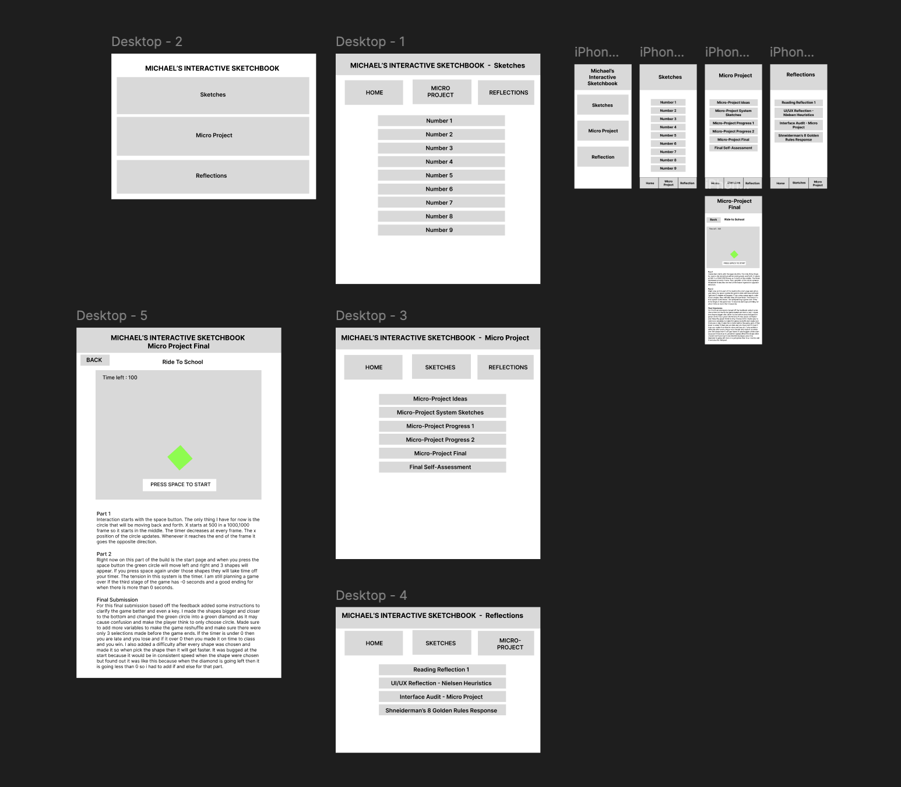

Some changes I that I made for the full draft is fix some of the hierarchies for both my desktop pages and my mobile pages by making new text styles for both texts. I also make it more organized for the different sections my putting each option in its own box for botht he mobile and the desktop versions of the interfaces. Something that I added last minute for both were the boxes to navigate back and forth or to other pages in the sketchbook in order to make th enavigation easier for the user because when I was doing the test for the present feature in figma I notices that I always had to use the browser to go back in the pages so I thought it would be more efficient for the user if I added the home button on all of them and also access to the other pages for example being on the sketches pages you will have the option top go to the micro project page or the reflection page. For the mobile version of the feature I added it to the bottom of the screen I was hoping to making it so those options stay at the bottom of the screen no matter where you scroll in the pages so the user is able to easier maneuver through the sketches faster and easier. The hierarchies I wanted to make the main name of the pages the biggest and have the buttons of the page be the second biggest in the interface and for the micro project you can see that the text at the bottom is the smallest to show that any other things such as info or steps are the smallest in the page. For the mobile page I wanted to make it as close as the desktop version as possible so it can have a theme going for both of the versions of the sketchbook. An example for Norman I wanted to take that the user always has to know what is going on in the design at all times, so I made sure to make the titles of the pages the biggest thing on the screen. For Nielsen, I pretty much thought the same as the Norman such as the first rule by letting the users informed about what is going on through appropriate feedback within a reasonable amount of time which I intent to show instantly as soon as they choose the page they want to go by having the title at the top with the biggest text. One other ruler from Nielsen was user control and freedom so I added the buttons on the screen to go back to the home page or the other pages just in case they want to see another page instead of the one that clicked. I also wanted to emphasize Consistency and standards in my prototype. For golden rules of interface design by Shneiderman I pretty much emphasized the same things as the Nielsen heuristics with rules being Striving for consistency, seeking universal usability, permitting easy reversal of actions, and keeping users in control.
